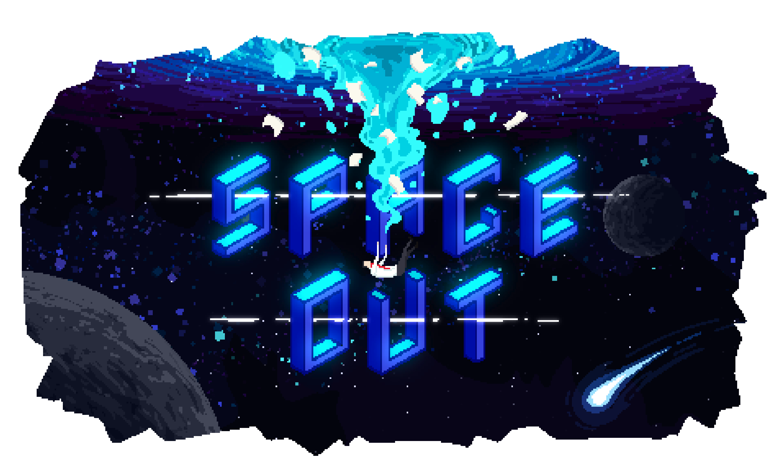
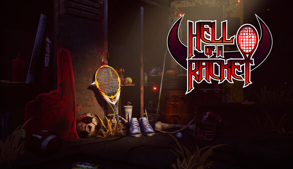
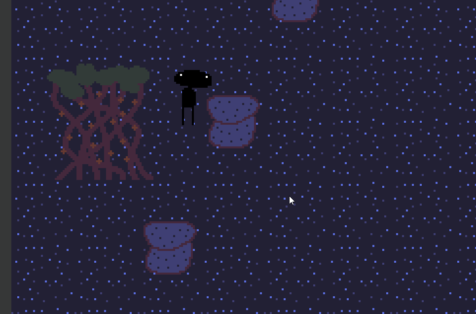
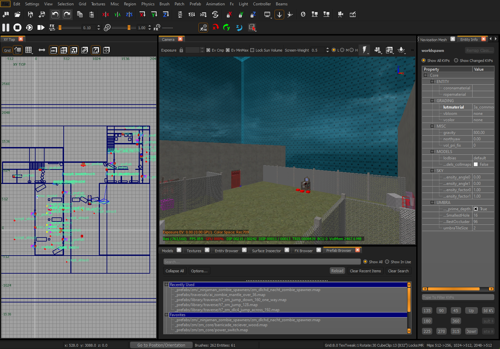
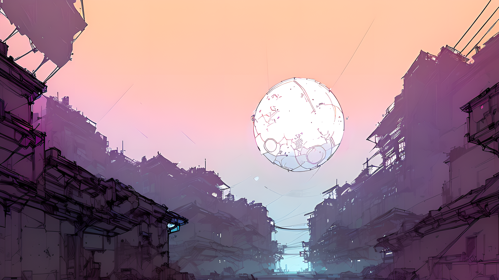
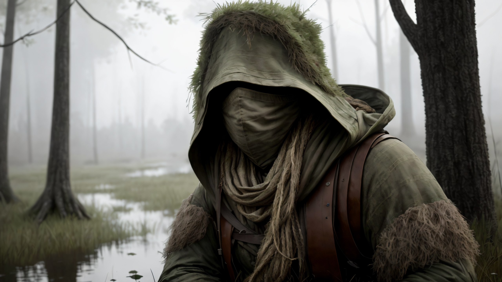
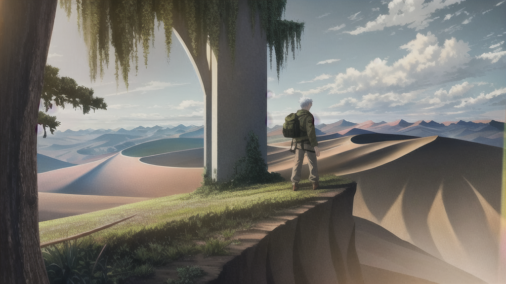

Games

Pip's Journey - Lead Software Engineer
An alternative 3D platformer developed with a team of six. I acted as the lead engineer developing the game systems with other programmers in Unreal Engine 5 using both C++ and blueprints. I managed other programmers, assigned them tasks, and managed our source control. We also directly collaborated with our artists to integrate our assets, mostly models and animations.

Space Out - Audio Engineer
An alternative 2D shooter developed with a team of six. While a still had a hand in the development of the game systems, my main focus was sound design due to our team's talent pool. I made music and sound effects for the game using mainly Ableton and Audacity. I also helped change our core gameplay mechanic towards the end of development to help us meet our deadline and better fit the game's narrative (a bit of design work essentially).

Hell Of A Racket (Steam Release) - Software/Audio Engineer
An alternative 3D shooter developed with a team of 30. Took a more supportive role due to the team's size, helping other engineers complete their various tasks while also dealing with source control and tech related issues. Also helped the audio team prototype music when I had free time.
Internship
Holaplex - Software Development Intern
A great opportunity I had to get some more typtical software development experience with new and interesting tech. I helped design and develop a smart contract feature with their engineering team for their Web3 services. We utilized GraphQL to interface with the Solona Blockchain, which was really cool to learn about. Most of my work was unit testing towards the end, but the whole thing was a really cool experience that got me out of my comfort zone.
Personal Projects
Godot

2D Game Prototype
I made a couple of small godot projects in order to learn the engine in my free time and this is the first one. A cute little 2D RPG prototype I made with original art. There is also a small 3D character controller test level that I made to see how the prototype would look in 2.5D style.

3D Game Prototype
The second project I made was purely focused on Godot's 3D capabilities. Fully functioning first person character controller with animation. I also did some small testing of in-game viewport rendering to see how it looked with shaders.
Black Ops 3 Mod Tools

Custom Zombies Map (No Link Yet)
I'm currently working on a custom zombies map using the Black Ops 3 Mod Tools. I figured it would be good to work on my design skills more and this seemed like a fun project. Lots of brush-based level design using proprietary tools along with some scripting.
AI
Stable Diffusion (Image Generation)
Another piece of tech that I like to mess around with in my free time. Started with SD1.5 through A1111 and now mainly use SDXL through ComfyUI. I like to use a lot of ControlNet and Inpainting passes to get better results. I have used some Loras in the past but prefer to avoid them if I can.
Here are some samples of stuff I've generated.
  
Music
When I'm not working on technical projects, I do like to make music in my free time. I play two instruments and I produce all my music digitally.
Here are a few I've uploaded that aren't tied to any games I've worked on.
About Me
I am a recent computer science graduate with experience building projects with teams in both an academic and professional setting. With expertise in C++, Python, and Javascript, I am well-versed in over 10 programming languages. Notably, I completed my university's 5-year program in 4 years, demonstrating my drive, dedication, and ability to excel. I am now eager to contribute my adaptable skills, strong work ethic, and passion for problem-solving to a dynamic organization.
If you have any questions, please reach out to me via LinkedIn